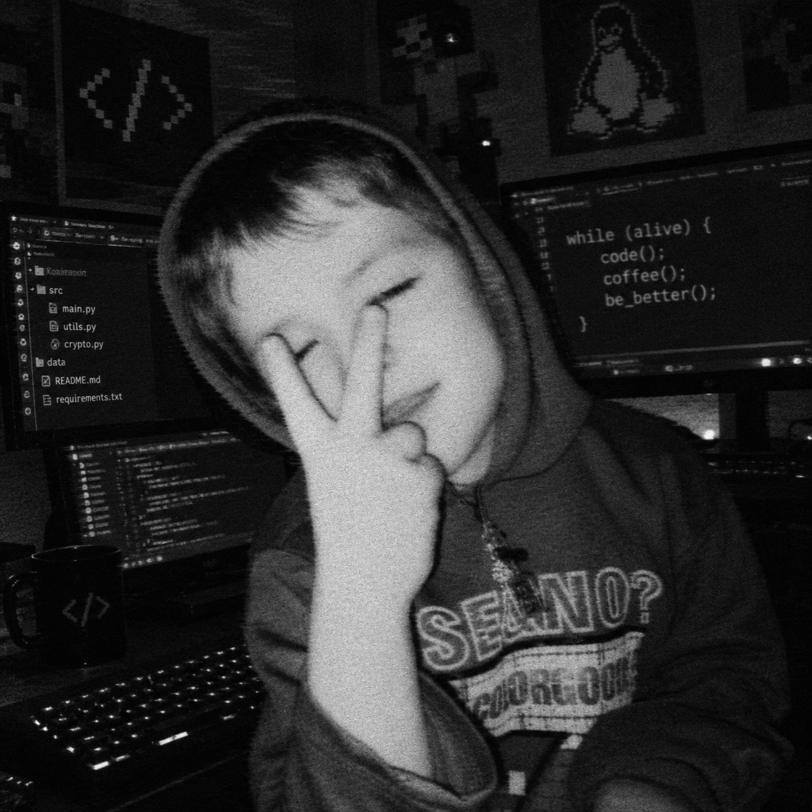

Deyron
Python Developer
Age18
День рожденияXX.XX.2008
Мои проекты
Наведи на проект, чтобы узнать подробнее
-
Telegram-бот с использованием OpenAI APIPythonTelegram-бот — программа, которая живёт в мессенджере и отвечает на сообщения и команды. Мой бот подключён к OpenAI API: он отправляет запрос нейросети и присылает ответ прямо в чат.
-
API для внутреннего чтения данных игрPythonAPI — это «окно», через которое одна программа запрашивает данные у другой. Мой API читает внутренние данные игр и отдаёт их в удобном виде. Это нужно для быстрого реагирования на изменения адреса.
-
Программы для автоматизацииPythonСкрипты и утилиты, которые берут на себя рутину: повторяющиеся действия выполняются сами, а время экономится.
-
Собственная программа по типу AnyDeskPythonПрограмма удалённого доступа: позволяет подключиться к другому компьютеру, видеть его экран и управлять им на расстоянии. Моя версия написана с нуля.
-
Множество Telegram-ботов и работа с Telegram APIPythonTelegram API — набор методов, через которые бот получает сообщения и действует: отправляет текст и файлы, делает кнопки и меню, работает в чатах и каналах.
-
Перенёс низкоуровневую программу по чтению адресов на C++C++Низкоуровневая программа работает близко к системе и читает данные по адресам. Я перенёс её на C++: он быстрее и даёт прямой доступ к памяти.
Python
Telegram API
REST API
C++ — в изучении